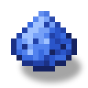

电动铲
alaindustrial:electric_shovel
概览
电动铲是本模组第三件手持电动工具，是电钻（石头）和电动链锯（木材）之后的泥土担当。用 EU/FE 代替耐久：只要电量够支撑当前方块，铲子挖掘 #minecraft:mineable/shovel 的速度就快于钻石铲（速度 9.0 对 8.0），每个成功破坏的方块消耗 20 EU/FE。满电量为 10 000 EU/FE，约可挖 500 个方块。
一条工具规则就够用：泥土、沙子、沙砾、粘土、雪、灵魂沙以及各色混凝土粉末——这些原版都已经归到 #minecraft:mineable/shovel 标签下，所以铲子不像链锯那样需要额外添加自己的标签。
没电时铲子也不会沦为废物：它会继续以徒手速度（1.0）挖掘，采集等级和所有掉落都保留——只是变慢，直到重新充能。
和本模组的其它 EU/FE 物品（储物袋、能量背包、电钻、链锯）一样，铲子没有耐久且不会损坏：图标下方的横条显示的不是磨损，而是 EU/FE 电量（黄色，LV 颜色）。
能量
自带 EU/FE 缓存，独立于电网。在储能库的充能槽和穿戴在身上的能量背包中充电；挖掘方块时消耗电量。
| 项目 | 数值 |
|---|---|
| 角色 | 带 EU/FE 缓存的手持工具：充能器的消费者 |
| 缓存 | 10 000 EU/FE |
| 充电 | 储能库槽位 / 穿戴的背包，≤ 32 EU/FE/刻（受 LV 上限约束）→ 满电约 16 秒 |
| 消耗 | 每个成功破坏的方块 20 EU/FE |
| 被动放电 | 无 |
| 组件 | （Long，persistent + networkSynchronized）——本模组所有电力物品共用的组件 |
消耗仅在服务端扣除，且仅针对硬度非零的方块：像雪层和草这种瞬间破坏的方块免费——就像它们不会磨损原版铲子一样。在创造模式下不消耗电量（）。
物品栏
不适用——铲子没有内部物品存储（堆叠 1）。
物品属性
不适用（物品）。
配方
合成：框架与电钻、链锯相同，但中心是钻石铲：上方一行铁锭，两侧是两枚电池，下方是两件铜线圈和一张电子电路。电池中持有的电量会带入成品铲子中。当玩家拥有铜线圈、电子电路或钻石铲时，配方会在配方书中解锁。
修复——不适用：没有耐久，没什么可修；"修复"就是 EU/FE 充电。
行为
挖掘： 当电量 ≥ 20 EU/FE 时，铲子以 9.0 的速度挖掘 #minecraft:mineable/shovel（钻石铲为 8.0）。每挖这样一个方块扣 20 EU/FE。 没电的铲子： 电量低于 20 EU/FE 时以徒手速度（1.0）挖掘，但采集等级和掉落都保留，且不消耗 EU/FE。此时效率附魔不起作用（原版门槛为 speed > 1.0）。 造土路与扑灭营火——可用。 右键点击草、泥土、灰化土、菌丝或缠根泥土会形成土路；右键点击燃烧的营火会扑灭它——与原版铲子完全一致。这是免费的：这种动作不消耗电量，因为木铲也能造土路，而整条系列都建立在"没电的工具仍能工作"的规则之上。 充电： 储能库的充能槽和穿在身上的能量背包都会自动接受铲子，最高 32 EU/FE/刻。 攻击： 像钻石铲一样攻击（伤害 2.5，攻击速度 1.0），但挥击不消耗 EU/FE，也不磨损铲子。 附魔： 铲子属于 #minecraft:shovels，因此附魔台和铁砧把它当作铲子。耐久和经验修补在不损坏的铲子上毫无用处，但也没有害处。 指示： 图标下方的横条显示电量（黄色，LV 颜色）。悬浮提示——"电量：X / 10 000 EU/FE"，归零时显示红色"已放电"。纹理在零电量时切换为"熄灭"样式。 丢弃/死亡/重新登录： 电量保存在物品中，会保留。 创造模式： 不消耗电量——就像原版铲在创造模式下不掉耐久。
金刚石涂层（升级）
金刚石涂层电动铲（，）是电动铲的第二档，也是本系列继金刚石涂层电钻、金刚石涂层电动链锯和金刚石涂层电动锄之后的第四个、也是最后一个升级。相对基础电动铲只有两处不同，其余一切原样继承。
1. 挖得更快。 速度为 10.5，基础电动铲为 9.0——与电钻（8.5 -> 10.0）、链锯（9.0 -> 10.5）和锄（9.0 -> 10.5）相同的 +1.5 步进。挖掘等级不变：仍是钻石级，升级只是加快作业，并不解锁新方块。
2. 可切换的精准采集。 Shift + 右键切换采集模式：
普通模式（新鲜合成品的默认模式）——掉落与基础电动铲完全相同； 精准采集模式——方块掉落自身。
切换本身是免费的：不消耗 EU/FE，想切多少次都行，没电的铲子也照样能切。
为什么精准采集给了铲子，却刻意不给锄头。 对锄头来说它形同虚设：其作用域内的所有方块本来就会掉落自身，既没有可翻倍的，也没有可抑制的。铲子恰恰相反——它的作用域里满是掉落表刻意替换掉落物的方块，而这种替换正是建筑玩家最不想要的：
草方块、灰化土、菌丝掉落泥土；用精准采集则得到方块本身，这也是搬运成型草坪的唯一办法； 粘土掉落 4 个粘土球；用精准采集则得到粘土块； 沙砾有几率掉落燧石（几率随时运提高）；用精准采集则必定得到沙砾； 雪块与雪层掉落雪球；用精准采集则得到方块本身和雪层本身； 可疑的沙子与可疑的沙砾在精准采集下按方块本身掉落。
为什么做成可切换，而不是直接附魔。 基础电动铲本身也能在附魔台上获得精准采集，但原版附魔不可逆，而且在铲子上代价很实在：精准采集与时运互斥，而铲子上的时运正是沙砾产燧石的倍率来源。为精准采集去附魔，就等于永久放弃了燧石产出。切换开关取消了这个取舍：时运保留给燧石，只有需要方块本身时才打开精准采集。
模式状态无需猜测：开启时物品会获得附魔光辉和悬浮提示中的"精准采集 I"字样（模式本身就是真正的原版附魔，而非独立的并行标志），另外悬浮提示中还有一行单独显示状态并提醒 Shift + 右键。切换伴随咔哒声和快捷栏上方的消息。
造土路与扑灭营火仍在普通右键上。 操作上的唯一差异：Shift + 右键点击方块会切换模式，并且不会造土路。不带 Shift 的普通右键依然会铺出土路并扑灭营火——与基础电动铲完全一致，同样免费。
原样继承： 10 000 EU/FE 缓冲（）、每方块 20 EU/FE（）、32 EU/FE/刻 的输入（）、相同的充电位置、没有耐久度、电量耗尽时以徒手速度（1.0）工作且保留掉落、创造模式行为，以及钻石铲的攻击属性。该升级没有自己的配置项：能量层按基类区分工具，因此这三个数值与基础电动铲共用。
合成： ——基础电动铲居中，上方一排三个金刚石粉（即「涂层」本身），两侧各一块白铜锭，下方是青金石粉。图样与材料同电动锄的升级一致；这两条支线都刻意避开了电钻（因瓦、银齿轮）与链锯（青铜、金齿轮）的材料，以免四条升级支线争夺同一种瓶颈资源。当玩家拥有基础电动铲、金刚石粉或白铜锭时，配方会在配方书中解锁。
升级时电量会保留。 该配方使用 类型，因此放入的基础电动铲中的 EU/FE 会转移到成品上，而不是烧掉。两者的缓冲相同——都是 10 000 EU/FE——因此转移没有损耗。电钻、链锯和锄的配方也是这样。
配方需要手动摆放。 配方书的自动填充按钮不会拾取已充电的铲子：原版在物品栏中查找材料时会比较物品组件，而已充电的铲子带有 pouch_energy，展示用的样品却没有。这是原版的限制，四个升级都一样——详见任务 。
进阶
本模组第三件电动工具：电钻负责石头，链锯负责木材，铲子负责泥土。LV 系列在三大主要材料上已闭环。 在储能库和电池之后可用：没有 LV 基础设施就无法合成与充电。 LV 等级。其余电动工具（锄/军刀/纳米弓）属于未来工作。
相关内容
电钻——无耐久 EU/FE 工具的先例；系列中负责石料的部分。 电动链锯——同一系列中负责木材的部分。 能量背包——在物品栏中直接给铲子充电。 储能库——铲子的充电来源（充能槽）。 电子电路——合成组件。
合成
有序合成
▶
电动铲
用于
有序合成

▶
金刚石涂层电动铲